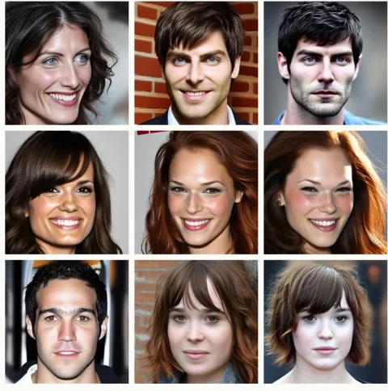
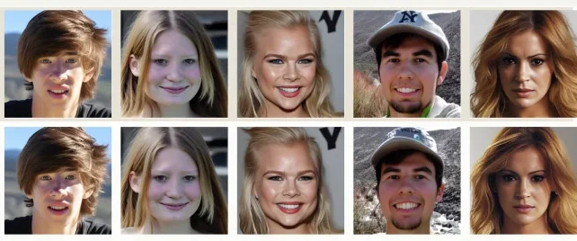

First author · IJCB2026
PIU: Proximity-guided Identity Unlearning in ID-Conditioned Diffusion Models
Protects a chosen identity in ID-conditioned diffusion models by re-teaching what its identity conditioning means.

The setting
Face→ArcFace embedding→Arc2Face→New photos of that person
Method
01
Forget loss
Target conditioning → generates the anchor
02
Preservation loss
Every other identity → unchanged
4.29%
of parameters updated
Identity-sensitive cross-attention layers only
Everyone else stays the same
